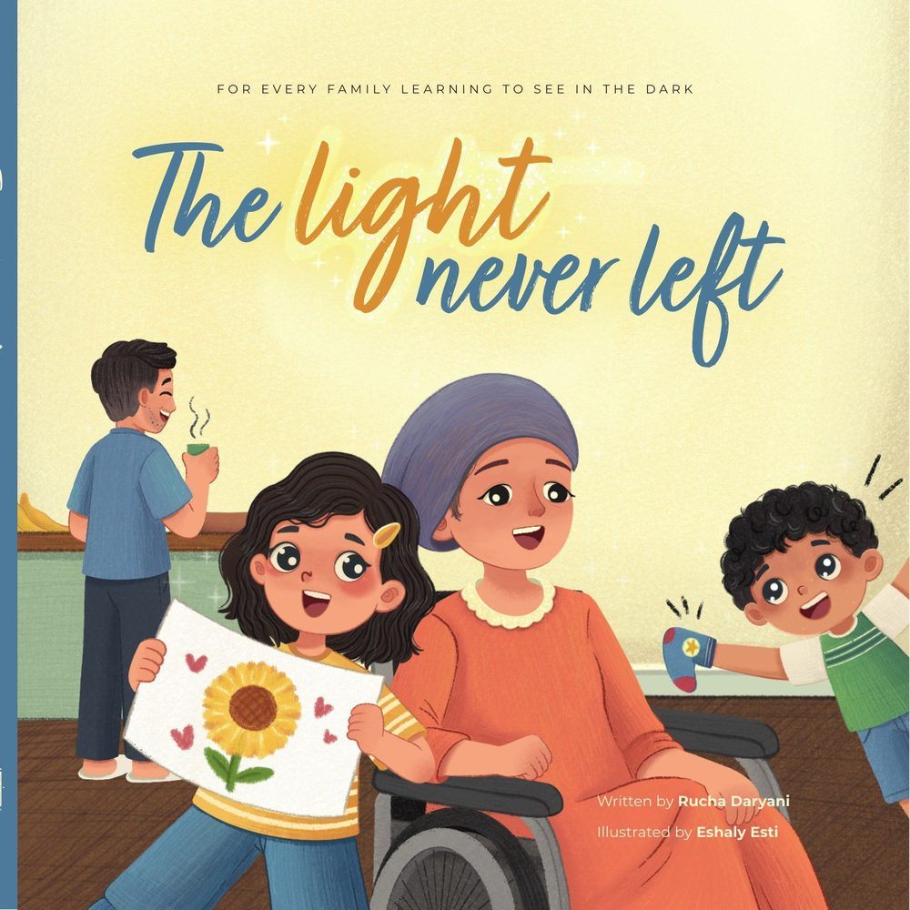
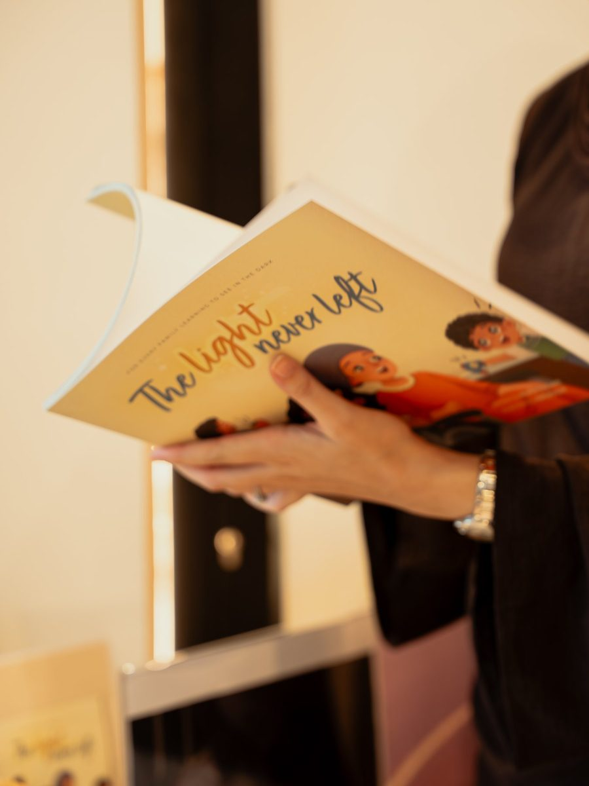
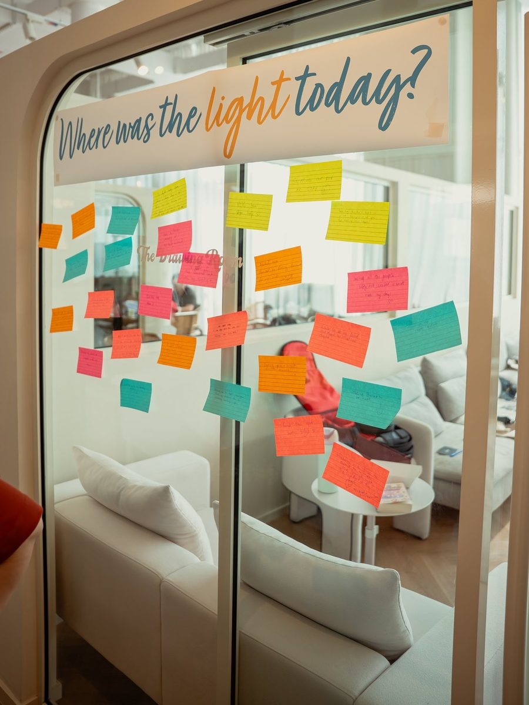
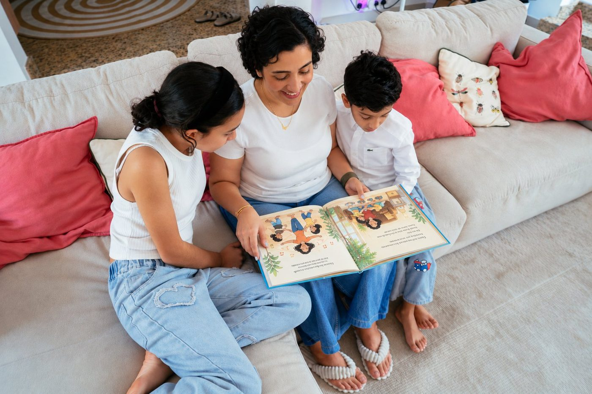
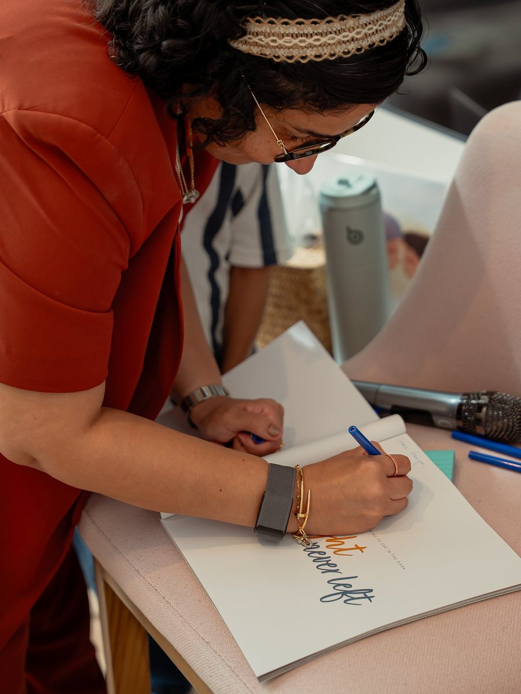

A picture book by Rucha Daryani
For every family learning to see in the dark.
For children aged five to ten, about what happens to a whole family when one person’s life changes.
The story
Ari and Theo’s world is full of light, laughter and stories. Then, one day, everything shifts when the person at the centre of their world goes away.
There are no easy answers, only uncertainty and silence.
The Light Never Left is a tender story about the small acts of love that make a family whole again, and the courage it takes for a family to survive the unexpected.

Why this one is different
Most children’s books about difficult things hand the reader a technique. The Invisible String gives you a string to imagine. The Colour Monster gives you jars to sort your feelings into. The technique is the product, and it works for the children it works for.
Ari finds her own way back, and it belongs to her. Another child’s would look like something else entirely. Drawing, or making jokes, or sitting in the same room a while longer without saying anything.
Every other book hands your child a method. This one tells them their way back will look like nobody else’s, and that one small step, even in the dark, is enough.
Maybe brave just means taking one small step, even in the dark.
From the book
At the end of the book, Ari realises the light she had been missing was never only in her mother. It was in Theo’s help, in her father’s quiet steadiness, in her own drawings.
That became a question we put on the wall at the launch, and people filled it with notes before they left.
Ask it at dinner, or at bedtime, or at the end of a school day. Everyone answers, adults included. The answers can be very small. Someone made toast. Someone laughed. Nothing gets ranked and nothing gets corrected.
It takes five minutes and no materials, and it is the one thing I would ask any family reading this book to try.


Why I wrote it
In 2024, at 38, I had a stroke following a medical error. I came through several surgeries and relearned how to walk and how to speak.
My children were nine and five. I watched them try to make sense of a home that had changed overnight, and I could not find anything written for them.
So I wrote it from my daughter’s side rather than my own.
Who it is for
Children aged five to ten living through a change at home. A parent’s illness. A separation. A stretch of depression. Any change that makes home feel unfamiliar.
And the adults reading it to them, who are usually carrying the same thing.
The launch
The Light Never Left was unveiled in Dubai on 21 October 2026 by Sania Mirza.
The evening also marked the launch of The Second Act, a movement about what happens after life changes in ways we never expected.
I visit schools to read The Light Never Left and to talk with children about what it means to keep going when things are hard, and about the fact that there is no single right way to do it.
Sessions usually finish with the light question and a wall of their own.
The Light Never Left is available now from UHIB Books, the publisher, who handle payment and delivery.
